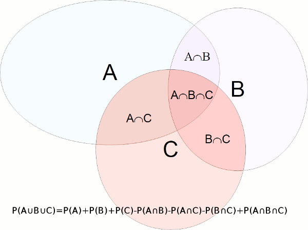

Descripción
Calcula la probabilidad de la unión de sucesos mutuamente independientes a partir de la probabilidad de cada suceso.
Para dos sucesos independientes esta probabilidad es P(A∪B)=P(A)+P(B)-P(A)P(B).
Para tres sucesos mutuamente independientes esta probabilidad es P(A∪B∪C)=P(A)+P(B)+P(C)-P(A)P(B)-P(A)P(C)-P(B)P(C)+P(A)P(B)P(C):

Cadena de entrada
probsum
Cadena de salida
probsum
Uso
probsum(<probabilidad>[,<probabilidad>]+)
Ejemplos
probsum(0.2,0.9)
RealDoble: 0.92
probsum(0.2,0.1,0.5)
RealDoble: 0.64
probsum(0.01,0.01,0.01,0.01,0.01)
RealDoble: 0.049009950100000005